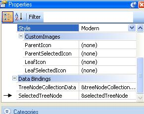
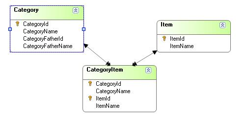
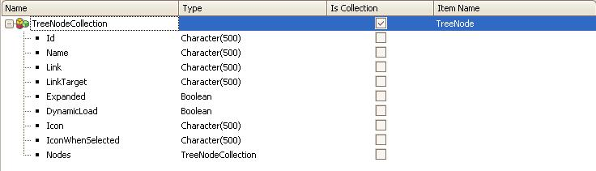

The treeview control provides a rich visual presentation of hierarchical data. It can be fully customized at design time or runtime (if necessary) through a vast set of properties that allow you to configure how the tree will be displayed. The control is based on Yahoo! Treeview. Key features:
Using the controlAfter dragging and dropping a treeview control into a web panel or transaction you will notice that the following variables are created:
&treeNodeCollectionData and &selectedTreeNode are automatically assigned to the control's TreeNodeCollectionData and SelectedTreeNode properties, respectively. &treeNodeCollection data will hold the tree structure, while &selectedTreeNode will be used to hold the currently selected node of the treeview when handling events. &parentNode and &treeNode, for their part, are auxiliary variables used in the code snippet to create a sample tree. The snippet looks as follows: Sub 'TreeViewSample' &treeNode.Id = "Some GeneXus Sites" &treeNode.Name = "GeneXus Sites" &treeNodeCollectionData.Add(&treeNode) &treeNode = new() &treeNode.Id = "GeneXus Home Page" &treeNode.Name = "GeneXus Home Page" &parent = &treeNodeCollectionData.Item(1) &parent.Nodes.Add(&treeNode) &treeNode = new() &treeNode.Id = "Developer Resources" &treeNode.Name = "Developer Resources" &parent = &treeNodeCollectionData.Item(1) &parent.Nodes.Add(&treeNode) &treeNode = new() &treeNode.Id = "GXTechnical" &treeNode.Name = "GXTechnical" &parent = &treeNodeCollectionData.Item(1).Nodes.Item(2) &parent.Nodes.Add(&treeNode) &treeNode = new() &treeNode.Id = "GXSearch" &treeNode.Name = "GXSearch" &parent = &treeNodeCollectionData.Item(1).Nodes.Item(2) &parent.Nodes.Add(&treeNode) EndSub //Event treeview1.NodeClicked // textBlock1.Caption = &selectedTreeNode.Name //EndEvent //Event treeview1.PopulateNode // &treeNode = new() // &treeNode.Id = "Server Node" // &treeNode.Name = "Server Node" // &selectedTreeNode.Nodes.Add(&treeNode) //EndEvent This snippet creates the treeview shown below. In addition, you will notice that there's a snippet that shows you how to manage the NodeClicked event and how to populate a treeNode on demand (both topics will be covered later).
Control Properties
There are also are some predefined styles that can be applied to the treeview. These styles can be extended, but in order to do so, you need to change certain css and js codes. The list of available styles is:
TreeNode SDT fieldsWhen creating a new treeNode (TreeNodeCollection.TreeNode), there are several fields that allow you to specify how the treeNode behaves and how it should be displayed. These field are:
Handling the NodeClicked eventWhen a node is clicked, a NodeClicked event will be triggered every time you have a code to handle that event from the server side. An example of a code for handling that event would be:
Event treeview1.NodeClicked
textBlock1.Caption = &selectedTreeNode.Name
EndEvent
It should be noted that the NodeClicked event is raised every time you click the node but not when the node is expanded or collapsed using the plus/minus icons. Dynamic Load (load on demand)Nodes can be loaded on demand, that is, you can add children to a node at runtime. In order to do this you have to set the dynamicLoad property of the treeNode to True. &treeNode = new() &treeNode.Id = "SampleNode" &treeNode.Name = "SampleNode" &treeNode.DynamicLoad = true Consequently, when "SampleNode" is expanded for the first time, you can add children to it. This can be accomplished by handling the PopulateNode event of the treeview as follows:
Event treeview1.PopulateNode
&treeNode = new()
&treeNode.Id = "Server Node"
&treeNode.Name = "Server Node"
&selectedTreeNode.Nodes.Add(&treeNode)
EndEvent
The &selectedTreeNode variable represents the node that has been expanded. This is because we have previously bound the &selectedTreeNode variable to the SelectedTreeNode property of the treeview (this is done automatically when you drop the treeview control in a form, but you can change this).  Loading a Treeview control using a Recursive Data ProvidersSuppose you have the following entities:  CategoryFatherId and CategoryFatherName are obviously subtypes of CategoryId and CategoryName, respectively. Consequently, each Category has a "Category Father". Moreover, each Item is related to a Category through the CategoryItem transaction. Now suppose that you want to create a Data Provider that recursively loads the treeview structures using the entities described above. That data provider should start loading the "top parent category" (the category that has 0 as the CategoryFatherID) and then go on to load all its children recursively (that is, it should load its child categories and items). In addition, remember that the TreeNodeDataCollection structures look as follows:  The data provider will look as follows:
TreeNodeCollection
where CategoryFatherId = &CategoryFatherId
{
Id = str(CategoryId)
Name = CategoryName
Link = ViewCategory.Link(CategoryId)
Nodes = Catalog(CategoryId)
}
TreeNodeCollection
where CategoryId = &CategoryFatherId
{
Id = str(ItemId)
Name = ItemName
Link = ViewItem.Link(ItemId)
}
You should then call this data provider as follows:
Event Start
&treeNodeCollectionData = Catalog(0)
EndEvent
...where &treeNodeCollection data is a TreeNodeCollection SDT-based variable. Note that we call the data provider passing 0 as a parameter because we want to start loading the nodes whose CategoryFatherID is 0 (that is, the Categories that have no "parent"). LicensingThis user control automatically distributed with GeneXus uses the following components:
|
| Backlinks |
| Category:Common Controls |